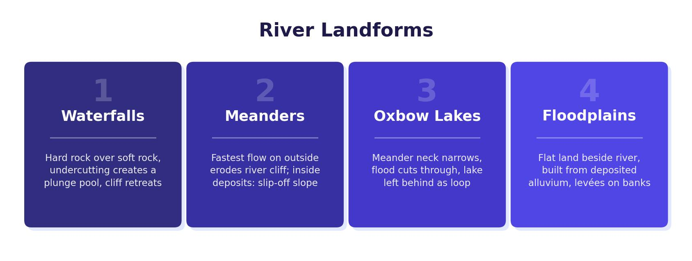

Upper Course Landforms
In the upper course, the river channel is narrow and the gradient is steep. The dominant process is vertical erosion, which cuts downwards into the river bed. This creates steep-sided V-shaped valleys and distinctive erosional landforms including interlocking spurs, waterfalls and gorges. On the River Tees, this upper section begins at Cross Fell (893 m above sea level) near the source.
Interlocking Spurs
Interlocking spurs are areas of hard rock left behind as the river erodes softer rock more quickly. The river winds between these ridges, which project from alternate sides of the valley. They are characterised by a steep gradient, narrow valley floor and a winding, narrow river channel.
Waterfalls
A waterfall forms where a band of hard rock lies over softer rock. The formation is a step-by-step process:
- Stage 1 — falling water and rock particles loosen and wear away the softer rock through abrasion.
- Stage 2 — the hard rock above is undercut as erosion of the soft rock continues through hydraulic action, creating an overhang.
- Stage 3 — the unsupported hard rock overhang collapses into the plunge pool, where it is broken up by attrition and washed away.
- Stage 4 — erosion continues and the waterfall slowly retreats (migrates) upstream. The process then repeats.
High Force on the River Tees is a well-known example of a waterfall in the upper course. The hard Whin Sill (a band of dolerite) overlies softer limestone and shale, creating the conditions for waterfall formation.

Gorges
A gorge is the steep-sided valley left behind as a waterfall retreats upstream. Every time the overhanging hard rock collapses, the waterfall moves back and the gorge grows longer. The river takes up the whole width of the valley floor, and the sides are steep — almost vertical.
Middle Course Landforms
In the middle course, the valley widens and the gradient decreases. The river has more energy for lateral erosion (sideways erosion), and both erosion and deposition occur. This creates meanders and oxbow lakes.
Meanders
A meander is a bend in the river channel. Water travels fastest on the outside of the bend, where it erodes the bank through hydraulic action and abrasion, creating a steep river cliff. On the inside of the bend, the water flows more slowly and loses energy, depositing sediment to form a gently sloping slip-off slope.
On the River Tees, meanders are found in the middle course between Darlington and Yarm. The outside bends gradually erode laterally into the edges of the valley, while the meander position shifts slowly downstream over time.
Oxbow Lakes
An oxbow lake forms when a meander loop is cut off from the main channel. The process occurs over four stages:
- Stage 1 — the meander moves laterally across the valley, and the neck between two bends gets narrower over time.
- Stage 2 — during a flood, the river takes the shortest route and cuts across the narrow neck, creating a new, straighter channel.
- Stage 3 — when floodwater drops, the river returns to its original channel, but this is repeated each time flooding occurs.
- Stage 4 — the old meander loop is permanently cut off from the main channel, forming an oxbow lake. Over time, it is colonised by plants and gradually dries up.
Lower Course Landforms
In the lower course, the river flows through a wide, flat valley. The channel becomes wider and deeper, with a smoother, almost semi-circular cross-section due to deposits of silt and mud. The gradient is very gentle — on the River Tees, the lower course drops from just 60 metres to sea level across roughly half the river’s total length. Deposition is the dominant process here.
Flood Plains
A flood plain is a low-lying area of land either side of the river in the lower course. Its width is created by meander migration, where the outside bends erode laterally into the edges of the valley, gradually cutting a wider valley. When floods recede, a layer of sediment is deposited across the flood plain, making it slightly higher and more fertile. This builds up over hundreds of years.
Levées
A levée is an embankment along the river banks, often several metres higher than the surrounding flood plain. When a river bursts its banks, the water slows down as it hits the flat land and begins depositing material. The heaviest sediment is deposited first, right next to the channel, gradually building up the banks. Each flood adds more material, raising the levée higher over time. The river bed also rises with deposited material, meaning the river level can sit above the level of the surrounding flood plain.
If a levée is breached (broken through), flooding can be worse than normal because the land behind the levée sits lower than the river. Water pours in rapidly and struggles to drain back because the levée blocks the return route.
Estuaries
An estuary is the tidal mouth of a river, where it meets the sea. Estuaries are characterised by large amounts of deposited sediment (alluvium) because the flat land means the river moves very slowly, with little gravitational energy to carry material. The River Tees estuary near Middlesbrough has extensive mudflats and is surrounded by flat, low-lying land. Estuaries flood easily because deposited sediment reduces the depth of the channel, and the surrounding flood plain offers no gradient to carry water away.
Estuaries are often important industrial areas because the flat land is easy to build on and the proximity to the sea supports shipping and trade. The River Tees estuary historically supported major chemical works and industry.